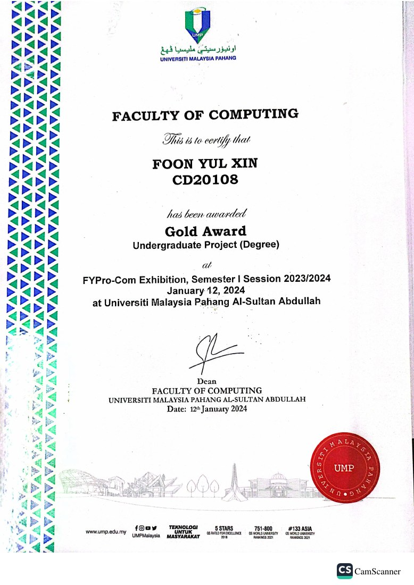
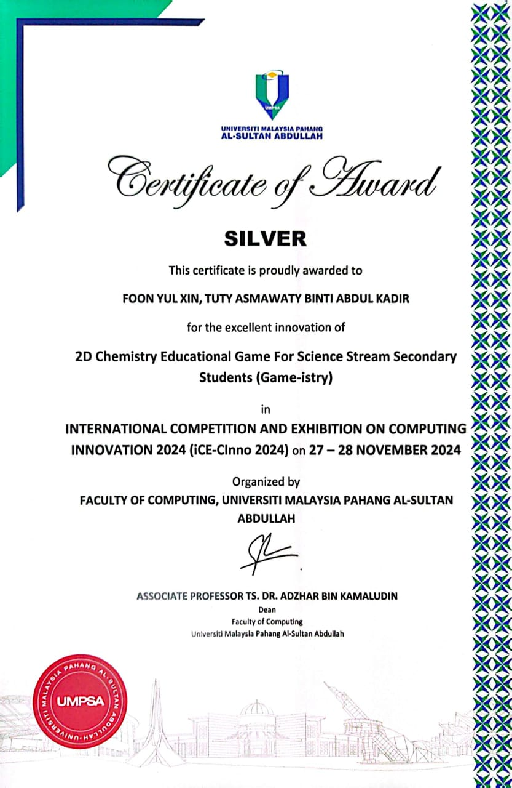
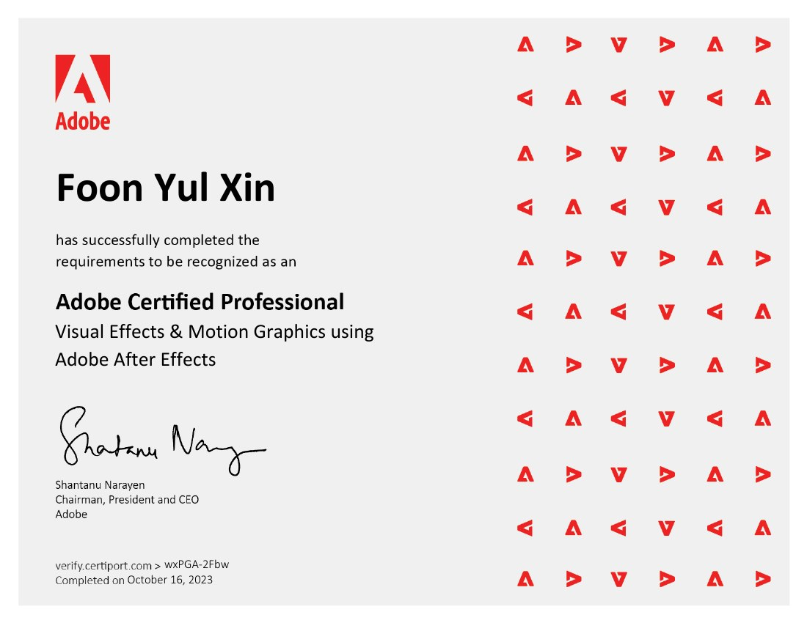
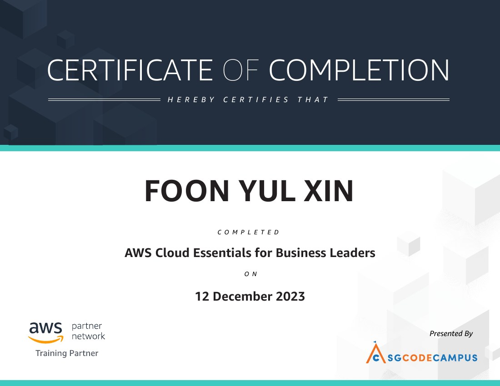
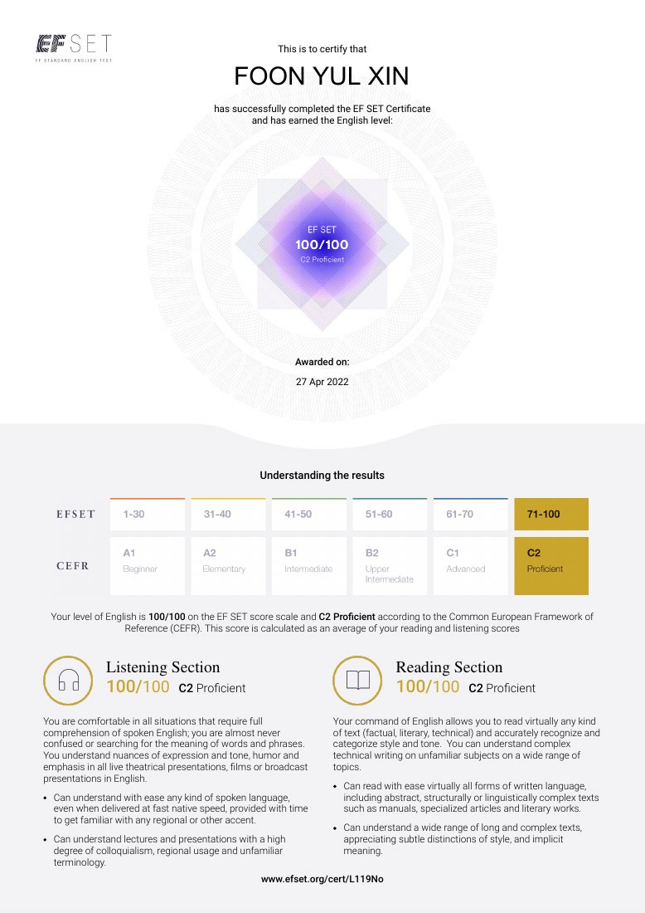
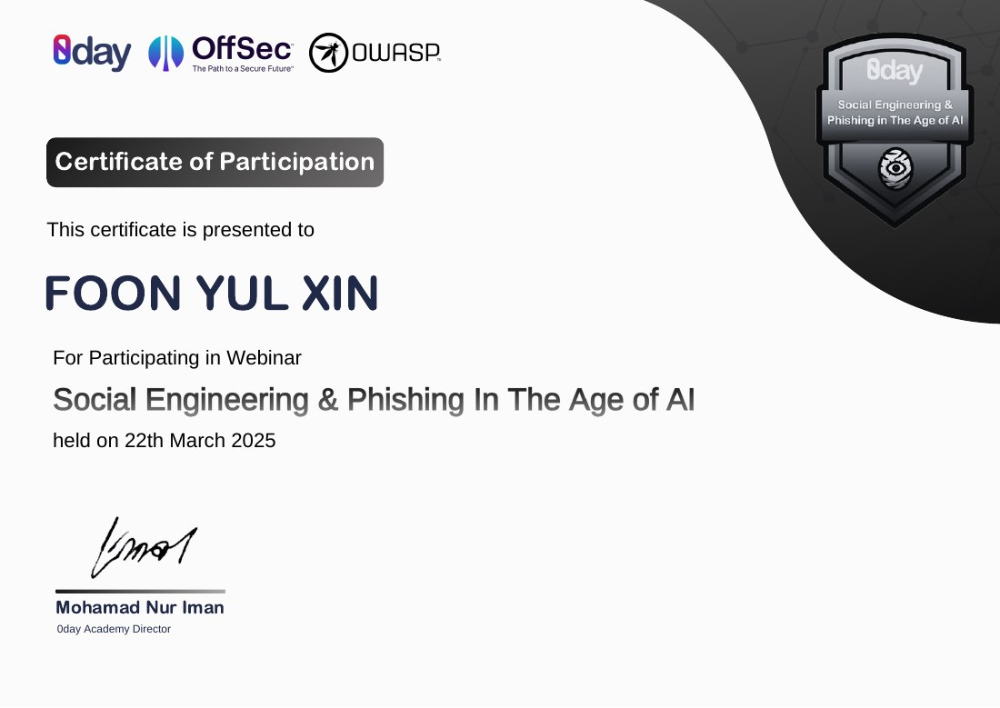
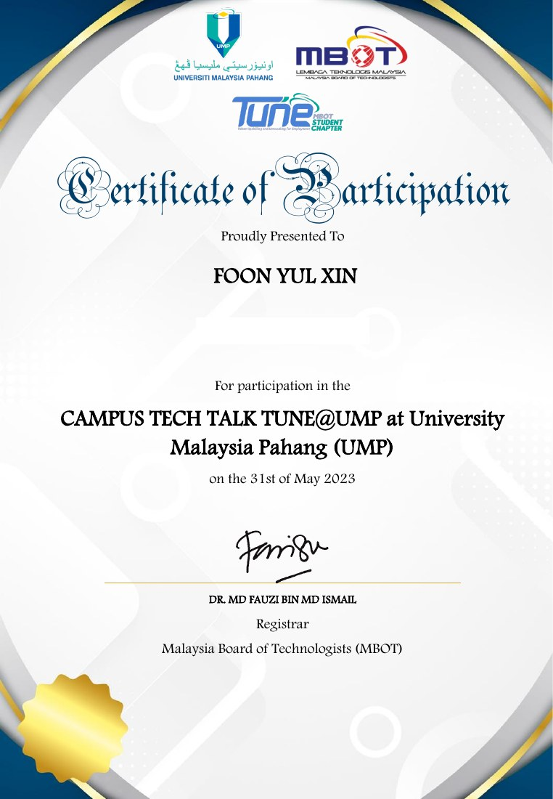

Award · 2024
Gold Award — FYPro-Com Exhibition
Gold Award for an Undergraduate Project (Degree) at the FYPro-Com Exhibition, Semester I Session 2023/2024, Universiti Malaysia Pahang Al-Sultan Abdullah.
A collection of awards, professional credentials, training certificates, and learning milestones earned throughout my academic and personal development.
// Recognition for project work

Gold Award for an Undergraduate Project (Degree) at the FYPro-Com Exhibition, Semester I Session 2023/2024, Universiti Malaysia Pahang Al-Sultan Abdullah.

Silver Award for “2D Chemistry Educational Game for Science Stream Secondary Students (Game-istry)” at the International Competition and Exhibition on Computing Innovation, held on 27–28 November 2024.
// Creative and technical learning

Visual Effects & Motion Graphics using Adobe After Effects. Credential dated October 16, 2023.

Certificate of completion dated December 12, 2023.
// Communication and community learning

EF SET score of 100/100, C2 Proficient for Reading and Listening, awarded April 27, 2022.

Certificate of participation in a webinar hosted by 0day Academy, dated March 22, 2025.

Certificate of participation in the event at Universiti Malaysia Pahang on May 31, 2023. Personal identification number has been redacted.